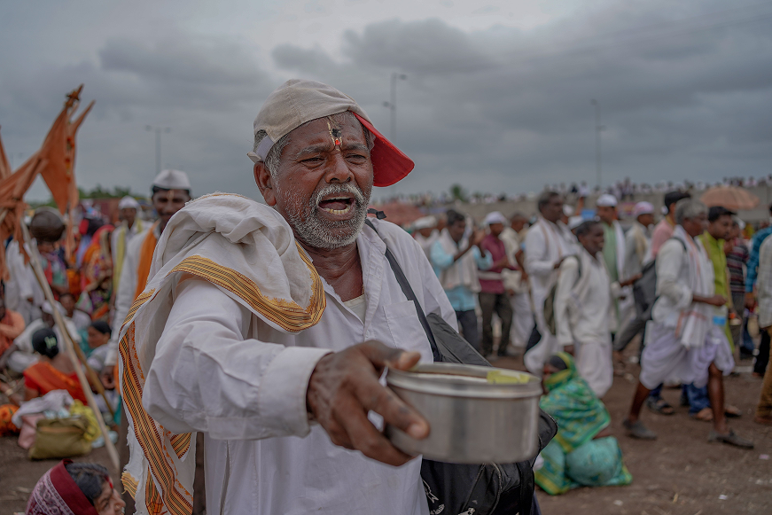

<style>
    .malshirashSec {
        min-height: 140vh;
        background: url("images/malshirashBg.png") center / cover no-repeat;
        display: flex;
        justify-content: center;
        align-items: center;
        position: relative;
    }


    .malshirash-card-text {
        z-index: 9;
        text-align: start;
        color: #fff;
        font-size: 32px;
        line-height: 1.5;
        width: 50%;
        background-color: #fdbc187b;
        width: 30%;
        padding: 20px;
        position: absolute;
        top: 40%;
        left: 35%;
        transform: translateX(-50%);
    }

    .malshirash-card {
        width: 35%;
        position: absolute;
        top: 20%;
        left: 60%;
        transform: translateX(-50%);
    }
    .malshirashReel {
        display: flex;
        gap: 30px;
        min-height: 100vh;
        justify-content: center;
        align-items: center;

        div {
            width: 30%;
            height: 100%;

            video {
                object-fit: cover;
            }
        }
    }
</style>

<section class="malshirashSec">
    <div class="malshirash-card-container">
        <div class="malshirash-card-text">
            <p> The town's residents and local organizations deeply engage in Annadan (food donation), setting up large
                community kitchens to feed thousands of pilgrims.</p>
        </div>
        
    </div>
</section>

<section class="malshirashReel">

    <div>
        <video controls preload="metadata" src="https://www.youtube.com/embed/UFDhFpEsWfs?si=IYxHO9uFcu5mksLz"></video>
    </div>

    <div>
        <video controls preload="metadata" src="https://www.youtube.com/embed/DImf_9bnhBU?si=Crtp_TC1nt7pA_HF"></video>
    </div>

    <div>
        <video controls preload="metadata" src="https://www.youtube.com/embed/i0GP92q1Ing?si=Q5vIH_lX84RfLRdp"></video>
    </div>

</section>